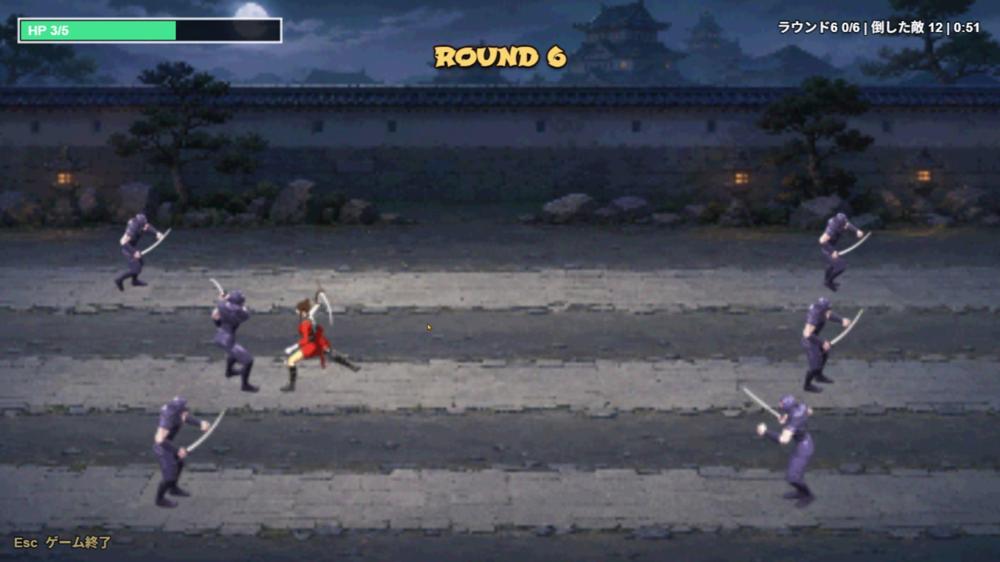
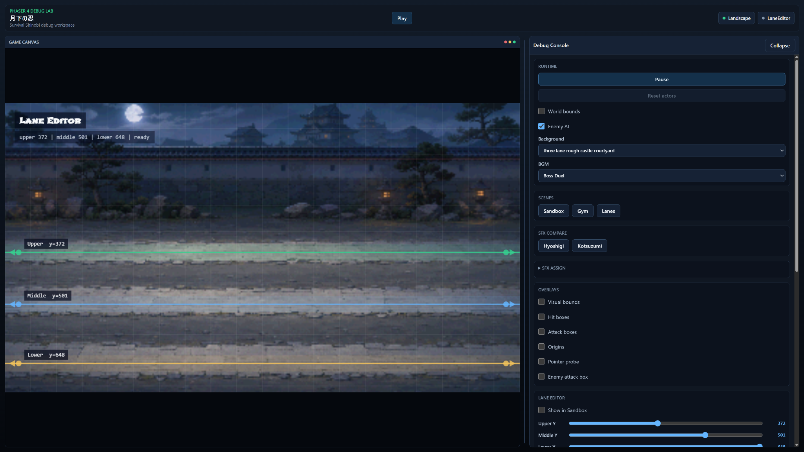
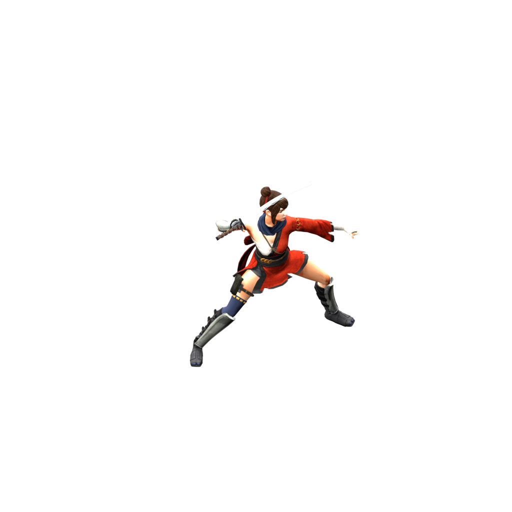
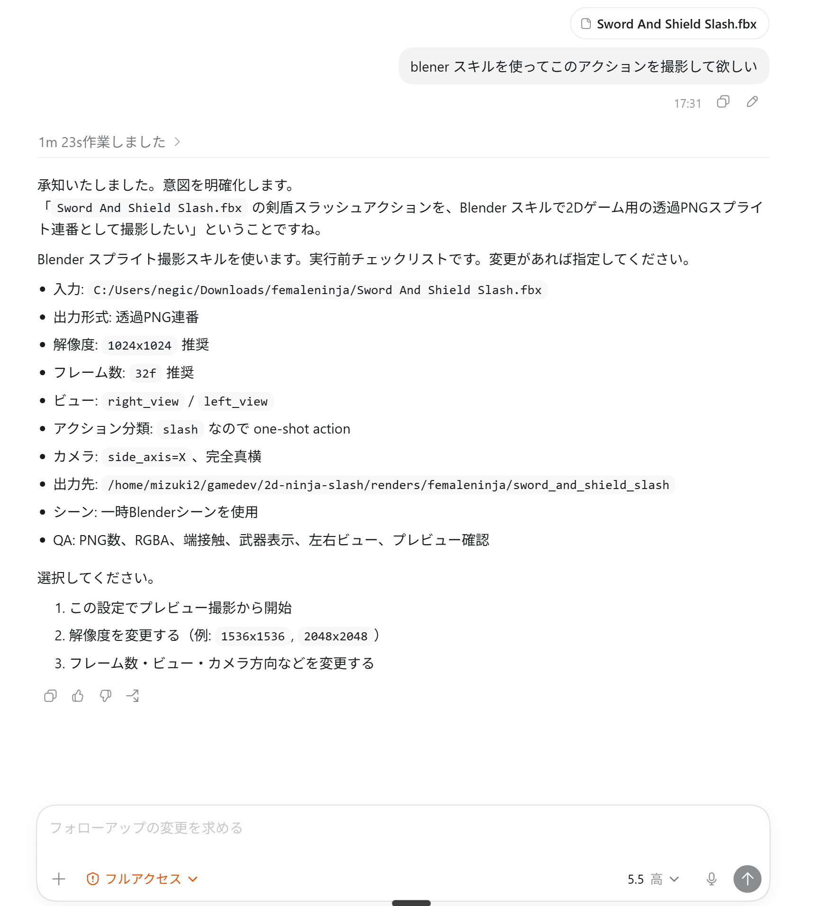
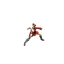
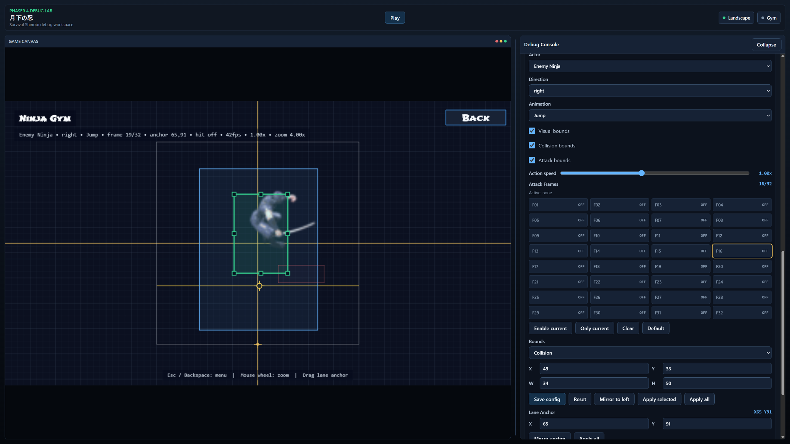
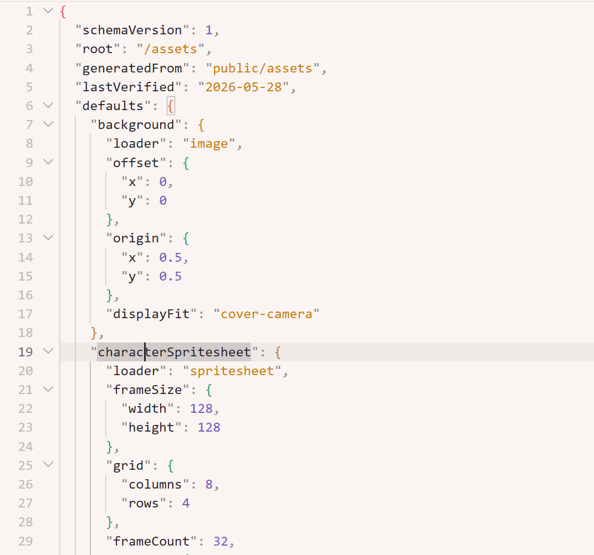

AIだけで一連の制作を完遂
画面に映るアニメーション、音楽、ゲームプレイ、UI要素までAI主導で制作。

AI-Driven Game Development Portfolio
アニメーション、音楽、ゲームプレイ、UI、モバイル対応、マルチプレイヤー化まで、 AIと独自開発スキルを使って制作したポートフォリオ作品です。
Overview
単にゲームを作っただけではなく、ゲームを継続的に作れる 開発システムを設計したことが、このポートフォリオの中心です。
画面に映るアニメーション、音楽、ゲームプレイ、UI要素までAI主導で制作。
Phaser、Blenderレンダー、ピクセルアート、スプライトシート化などをスキル化。
Webゲームからモバイル端末、さらにマルチプレイヤー対応まで構築。

Production Flow

Mixamoなどから3Dキャラクターとアニメーションを選び、ゲームに必要な動きを決めます。

Blender MCPを使い、3Dキャラクターを横向きカメラで1フレームずつ撮影します。

生成画像をゲーム画面になじむ低解像度ドット絵の表現へ変換し、素材化します。
正しい指示がないと、左右ビューの不一致、足元のズレ、フレームドリフトなどが発生します。 そこで、撮影ルール・解像度・フレーム数・アンカー確認・QAをまとめた blender-mcp-sprite-rendererスキルを作りました。
Development System

Extension
アセットと開発システムが整うと、デモゲームの内容は素早く実装できます。 さらに、同じAI開発フローでAndroid対応とマルチプレイヤー化も行いました。
